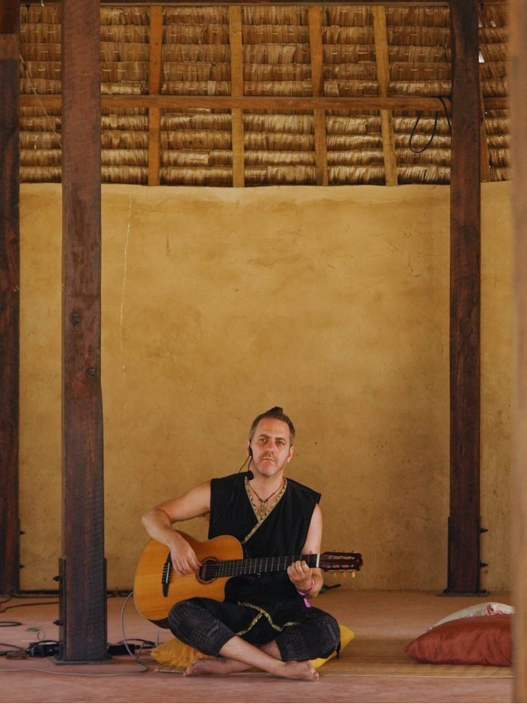

I like business.
I like the inner world.
I want to stop pretending they belong in separate conversations.

Business life: the short version.
I studied engineering because I like systems, logic and understanding how things work. Later came an MBA, then some London Business School, and then years in strategy, marketing and consulting: building companies and advising founders where decisions have real consequences.
The part that doesn’t fit neatly on LinkedIn
My own nervous system has not been a theoretical interest.
Various childhood abuse and trauma brought me into years of trauma-aware and somatic work. It’s also what led me to facilitate workshops and experiences on embodiment, boundaries and intimacy. Health and chronic pain, attachment, control and achievement have all met each other in fairly inconvenient ways.
I don’t claim everyone’s business problem is childhood trauma. It isn’t. But I know from the inside what it’s like when:
- you understand a strategy perfectly, and
- a part of you still won’t let you do it, because once… it just wasn’t safe to.
I still do real commercial work.
Besides my business coaching, with nervous-system and inner work included, I stay attached to real commerce.
I’m currently the head of marketing (fractional) of a startup growing 200% year on year, ALTIUS.capital.
I also previously co-founded a startup, and learned the less glamorous version too: we raised a million dollars, built a team of 16, made bets, got things wrong. Knowing a lot about business doesn’t exempt you from being human. It keeps this work attached to the world where someone eventually has to choose a price, ship the page or have the conversation.

What sound can do before language gets involved.
I’m an award-winning fingerstyle guitarist. I’m fascinated by what sound does before language gets involved: activation, settling, emotion, connection, permission.
That part of me belongs here too. I don’t think humans become more useful when we cut them into business, body, relationship and creativity.
And then I became slightly obsessed with AI.
I use it every day: to think, build, rehearse difficult conversations and get work out of my head and into the world. I even analyse the transcripts of sessions with my own therapist. You don’t need to be technical. You do need to be willing to use it as a serious working partner.
The question I keep asking: what can I let AI do, so that I, as a human, can be more present?
It came from putting the lives back together.
Strategy without the person becomes a beautiful plan nobody executes.
Nervous-system work without the business creates insight without movement.
AI without judgement produces a lot of very polished avoidance.
I want all three in the room.
For those who like it on one line.
Enough biography
What are you trying to build?
If there’s a business move that matters and something keeps getting complicated around it, that’s a good place to start.